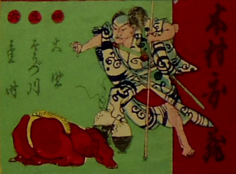

若者の前で土下座する赤鬼。目の前には山盛りの飯が二つ置かれている。
著作者：小信／出典：親書誌：U426_nichibunken_0275：[英勇揃双六]；エイユウ ソロイ スゴロク／日付：2014／資源識別子：U426_nichibunken_0275_0012_0000
Copyright (c)2010- International Research Center for Japanese Studies, Kyoto, Japan. All rights reserved.